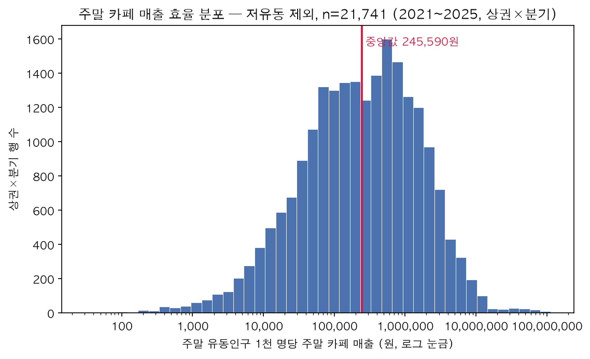
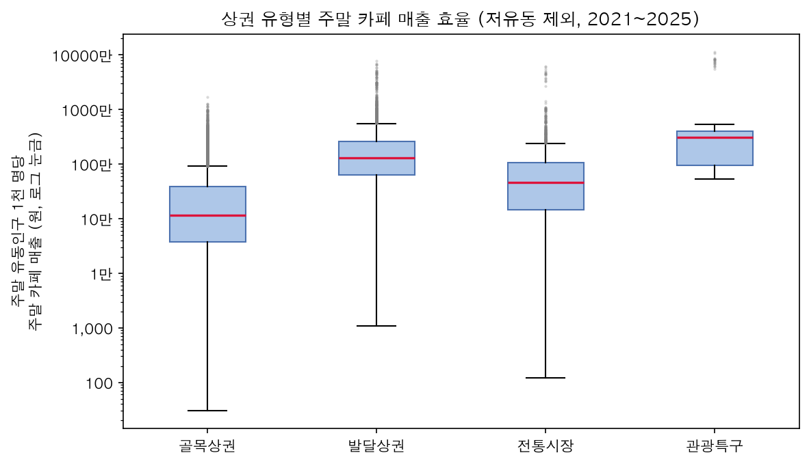
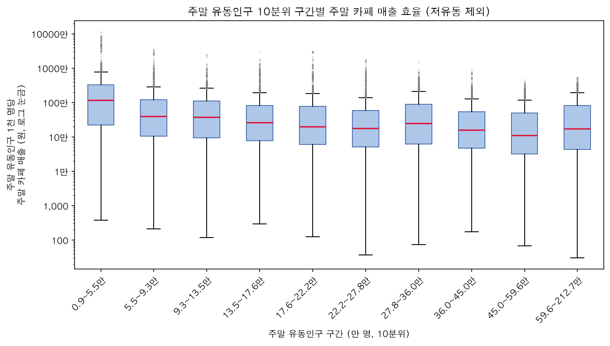
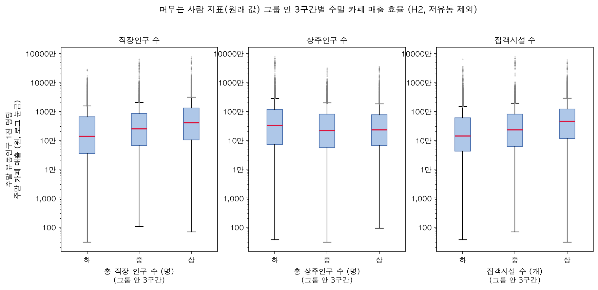
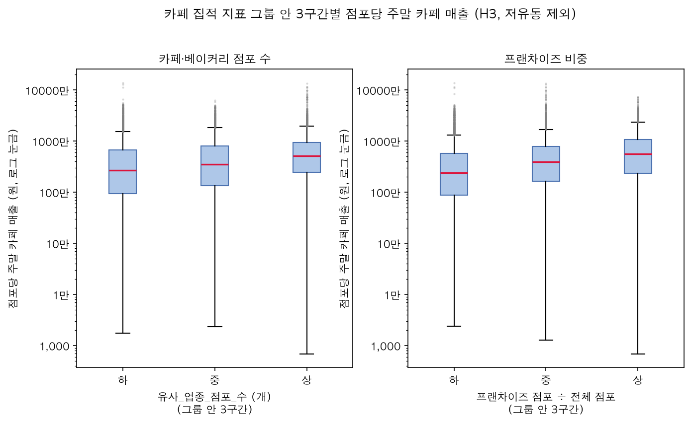

탐색적 데이터 분석
사람이 많이 지나간다고
카페가 잘 팔리지는 않았다
상권 × 분기 21,741건(2021~2025)에서 주말 효율의 분포와, 효율을 높이는 상권 조건을 가설로 확인했습니다.
1. 기준 정의주말 유동인구 1천 명당 주말 카페·베이커리 매출
효율 = 카페·베이커리(커피-음료 + 제과점) 주말 매출 ÷ (토 + 일 유동인구 ÷ 1,000), 상권 × 분기, 원
결제한 사람이 지나간 사람인지 알 수 없어(배달·주민·법인카드 결제 포함) '전환율'이 아니라 유동인구 대비 매출 효율로 해석합니다.
2. 결합과 전처리결측치와 이상치를 이렇게 처리했다
| 항목 | 처리 | 근거 |
|---|---|---|
| 주말 유동인구가 너무 작은 행 | 하위 1%(8,666명 미만, 220행) 제외 | 분모가 작아 지표가 폭발. 예: 청계산원터골은 주말 유동인구 8~700명인데 1천 명당 매출이 최대 72억 원 |
| 집객시설 세부 열 빈칸 | 0으로 채움 | 원본에 0이 하나도 없고 빈칸만 있음 → 빈칸 = 시설 없음 |
| 주말 매출 0원 (246행) | 유지, log(1 + x) | 실제로 주말 매출이 없는 상권일 수 있음 |
| 카페 점포 수 | 유사_업종_점포_수 사용 | = 점포_수 + 프랜차이즈_점포_수 (전 행 일치) |
| 연령대 비중의 분모 | 연령을 아는 매출 합계 | 연령 미상 매출 비율이 업종마다 다름 (카페 12.9%, 한식 21.3%) |
| 파일 열 이름·분기 코드 | 2025년 영문 열 이름 통일, 연분기 코드 분리 | 그대로 붙이면 같은 내용이 다른 열로 갈라짐 |
3. 분포상권 간 차이가 크고, 상권 유형이 기본 조건이다


4. 가설 확인무엇이 효율을 높이나
가설 1. 주말 유동인구가 많다고 효율이 높은 것은 아니다 지지

가설 2. 머무는 사람이 많은 상권이 효율이 높다 부분 지지

트러블슈팅 — 분모 함정
처음엔 '직장인구 ÷ 주말 유동인구' 같은 비율로 봤는데, 지표와 분모가 같아 상관이 부풀려졌다(무작위 값을 유동인구로 나눠도 상관 0.15). 비율 대신 원래 값으로, 같은 유형·같은 유동인구 수준끼리 다시 비교했다(직장인구 0.55 → 0.31).
가설 3. 카페가 몰린 상권은 손님을 나눠 먹기보다 더 끌어온다 약하게 지지

EDA에서 모델링으로효율 순위만으로는 '뻔한 답'이 나온다
2025년 '유동인구 상 + 효율 상' 상위 30곳 중 25곳이 발달상권(잠실역·명동 등)이었습니다. 상권 유형이라는 기본 조건이 그대로 드러나, 후보는 같은 조건 대비 효율이 몇 배인가로 고르기로 했습니다.